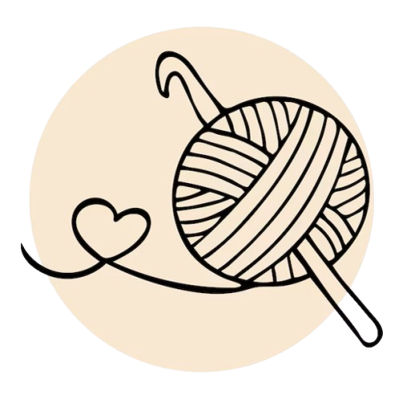
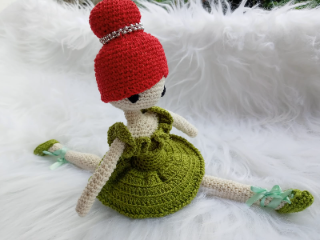
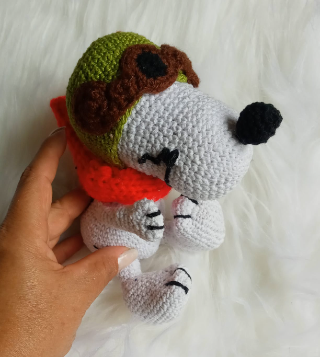

Amigurumi é uma técnica japonesa de crochê ou tricô, onde se criam pequenos bonecos e figuras. A palavra "amigurumi" é uma combinação de duas palavras japonesas: "ami", que significa "tricotado" ou "crochetado", e "nuigurumi", que significa "bicho de pelúcia". Essa arte tem uma longa história no Japão e ganhou popularidade global nas últimas décadas.

Amigurumi é uma verdadeira arte que transforma simples fios de crochê em encantadoras criaturas cheias de personalidade. Originada no Japão essa técnica tem conquistado corações ao redor do mundo, sendo perfeita tanto para quem faz quanto para quem recebe esses fofíssimos presentinhos.
Imagine só criar seu próprio exército de bichinhos, personagens de filmes e seriados, ou mesmo figuras que só existem na sua imaginação! O amigurumi não é apenas sobre o resultado final, mas também sobre o processo criativo e terapêutico de crochetar cada pontinho.
As vantagens de aprender a crochetar
Os 9 benfícios que vai de uma excelente forma de relaxamento e aumentar uma renda financeira:
- Redução do estresse: Crochetar pode ser uma atividade muito relaxante e meditativa. A repetição dos movimentos ajuda a acalmar a mente e reduzir a ansiedade.
- Criatividade e expressão: Crochetar permite que você explore sua criatividade e crie peças únicas e personalizadas.
- Estimulação cerebral: Aprender novos pontos e padrões mantém seu cérebro ativo e engajado, o que pode ajudar a melhorar a memória e a concentração.
- Melhora da coordenação motora: O movimento das mãos e dos dedos ao segurar a agulha e o fio ajuda a desenvolver habilidades motoras finas.
- Aumento da autoestima: Ver suas criações tomando forma e finalizadas pode trazer uma enorme sensação de realização e orgulho.
- Conexão social: Participar de grupos de crochê, seja online ou presencial, permite que você conheça outras pessoas com interesses similares e troque experiências e dicas.
- Economia e sustentabilidade: Fazer suas próprias peças pode ser mais econômico do que comprar prontas, e você ainda pode reutilizar fios e materiais, contribuindo para um consumo mais consciente.lasagna
- Presentes personalizados: Crochetar permite que você crie presentes únicos e especiais para amigos e familiares, mostrando todo o carinho e dedicação que você colocou na peça.
- Sentimento de paz: A concentração nos pontos e no trabalho manual proporciona uma sensação de paz e tranquilidade, funcionando quase como uma forma de meditação.

Material:
- Agulha de crochê n° 3
- Cola de tecido
- Fita de cetim (opcional)
- Linha diversas para compor sua bailarinha do seu gosto
Cabeça e corpo:
- 1° Anel mágico - 6 pt bx
- 2° 1 aum em cada carreira - 12 pt bx
- 3° 1 aum, 1 pt bx - 18 pt bx
- 4° 1 aum, 2 pt bx - 24 pt bx
- 5° 1 aum, 3 pt bx - 30 pt bx
- 6° 1 aum, 4 pt bx - 36 pt bx
- 7° 1 aum, 5 pt bx - 42 pt bx
- 8° Até 19° (total 12 carreiras) pontos sob pontos sem aum *Entre carreira 15° e 16° e o começo da carreira conta se 9 pontos coloca um olho e mais 9 outro olho
- 20° 1 pt bx e 1 dim - Encher
- 21° Carreira só de dim - 14 pt bx
- 22° 2 pt bx e 1 dim (3x) - 11 pt bx
- 23° até 26° Ponto sob ponto - 11 pt bx
Ombro:
- 27° 1 pt bx e 1 aum (2x) 3 aum - 14 pt bx
- 28° 2 pt bx e 1 aum - 24 pt bx
- 29° 3 pt bx e 1 aum - 30 pt bx
- 30° 4 pt bx e 1 aum - 36 pt bx
- 31° Trocar o fio para o vestido - 5 p 1 aum - 42 pt bx
- 32° Alça de trás 6 pt bx pula 9 pt bx e no 10° continua 11 pt bx pula 9 no seguinte mais 7 pt bx - 24 pt bx
- 33° e 34° Pega as duas alças ponto a ponto sob ponto - 24 pt bx
Cintura:
- 35° 5 pt bx, 1 dim, 10 pt bx, 1 dim, 5 pt bx - 22 pt bx
- 36° 5 pt bx, 1 dim, 8 pt bx, 1 dim, 5 pt bx - 20 pt bx
- 37° 4 pt bx, 1 dim, 8 pt bx, 1 dim, 4 pt bx - 18 pt bx
- 38° e 39° ponto sob ponto - 18 pt bx
- 40° 1 aum, 4 pt bx, 1 aum, 8 pt bx, 1 aum, 3 pt bx, 1 aum - 21 pt bx
- 41° 5 pt bx, 1 aum, 9 pt bx, 1 aum, 4 pt bx, 1 aum - 24 pt bx
- 42° 6 pt bx, 1 aum, 10 pt bx, 1 aum, 5 pt bx, 1 aum - 27 pt bx
- 43° Alça de trás do ponto, 7 pt bx, 1 aum, 11 pt bx 1 aum, 6 pt bx, 1 aum - 30 pt bx
- 44/ Pega as duas alças, 8 pt bx, 1 aum, 12 pt bx, 1 aum, 8 pt bx - 32 pt bx
- 2145 até 50° ponto sob ponto (6 carreiras) mais dois pontos para ficar no meio - Finalizar
Saia:
- 43° Primeira - uma correntinha de 3 em cada alça, 3 pt alt
- 43° Segunda - pega na alça de trás ponto sob ponto até a quinta carreira
- Finalizar uma borda com uma correntinha e pt bximo ponto sob ponto
Braço:
- 32° 9 ponto sob ponto por 20 carreiras. Da 1° até 20° carreira ponto sob ponto
- Finalizar costurando
- *NÃO tem enchimento
Babado da alça:
- 32° Primeiro correntinha de 3 pontos, coloque 3 pontos em cada alça
- Coloque o bastão de cola quente no pescoço e encha com enchimento
- Desesseis pontos para cada lado e costure no meio
Pernas:
- 1° Anel mágico - 9 pt bx
- 2° até 7° Ponto sob ponto - 9 pt bx
- 8° Faça 4 pt bx e volta os 4 pt bx (Calcanhar)
- 9° Continue com os 9 pt bx até 11°pt bx
- 12° 2 pt bx, 1 aum, 6 pt bx - 10 pt bx
- 13° Até 15° carreira, ponto sob pont - 10 bx
- 16° Coloque o enchimento, 3 pt bx, 1 aum, 6 pt bx, - 11 pt bx
- 17° Ponto sob ponto - 11 pt bx
- 18° 4 pt bx, 1 aum, 6 pt bx - 12 pt bx
- 19° Ponto sob ponto - 12 pt bx
- 20° 5 pt bx, 1 aum, 6 pt bx - 13 pt bx
- 30° Encher, 8 pt bx, 1 aum, 4 pt bx - 14 pt bx
- 31° Ponto sob ponto - 14 pt bx
- 32° 9 pt bx, 1 aum, 4 pt bx - 15 pt bx
- 33° Ponto sob ponto - 15 pt bx
- 34° 10 pt bx, 1 aum, 4 pt bx - 16 pt bx
- 35° até 42° 8 carreiras ponto sob ponto - 16 pt bx
- Finalizar de encher e costurar o corpo
Sapatilhas:
- 1° 7 correntinhas final das correntinhas, volta duas correntinhas, 4 pt bx, 4 aum na última correntinh 4 pt bx, 2 aum - 20 pt bx
- 2° 1 aum, 6 pt bx, 1 aum, 1 aum, 6 pt, 1 aum - 20 pt bx
- 3° Alça de trás ponto sob ponto - 20 pt bx
- 4° Pega duas alças sob ponto
- 5° 8 pt bx, pega 5 pt bx peas alças da frente, laça todos de uma vez, 7 pt bx
- Cola de tecido, cola nos pés
- Enfeite com fita de cetim ou fita de crochê
Cabelo:
- 1° Anel mágico - 6 pt bx
- 2° 1 aum em cada carreira - 12 pt bx
- 3° 1 aum, 1 pt bx - 18 pt bx
- 4° 1 aum, 2 pt bx - 24 pt bx
- 5° 1 aum, 3 pt bx - 30 pt bx
- 6° 1 aum, 4 pt bx - 36 pt bx
- 7° 1 aum, 5 pt bx - 42 pt bx
- 8° 1 aum, 6 pt bx - 48 pt bx
- 9° Até 17° ponto sob ponto - 48 pt bx
- 18° Franja - 1 pt bx, 3 lança, 3 pt bx, faz meio pt, 43 pt alt, 1 meio pt, 1 pt bx, finaliza com 1 pt bximo
Coque:
- 1° Anel mágico - 6 pt bx
- 2° 1 aum em cada carreira - 12 pt bx
- 3° 1 aum, 1 pt bx - 18 pt bx
- 4° 1 aum, 2 pt bx - 24 pt bx
- 5° 1 aum, 3 pt bx - 30 pt bx
- 6° 1 aum (2x), 9 pt bx - 33 pt bx
- 7° Até 10° ponto sob ponto - 33 pt bx
- 11° 1 dim (2x), 9 pt bx - 30 pt bx
- 12° 1 dim(3x), 8 pt bx - 27 pt bx
- Finaliza
Além de ser uma excelente forma de relaxamento, o amigurumi é uma ótima oportunidade para presentear amigos e familiares com algo feito à mão, carregado de amor e dedicação. E quem não gosta de receber um presente assim, não é mesmo?
Então, pegue suas agulhas, escolha seus fios favoritos e embarque nessa Vai ser divertido e super recompensador ver suas criações ganharem forma e encantar a todos ao seu redor.
